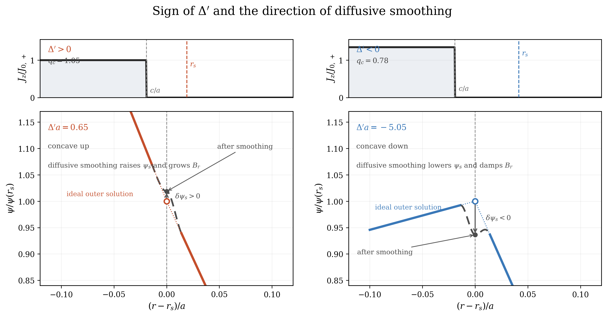
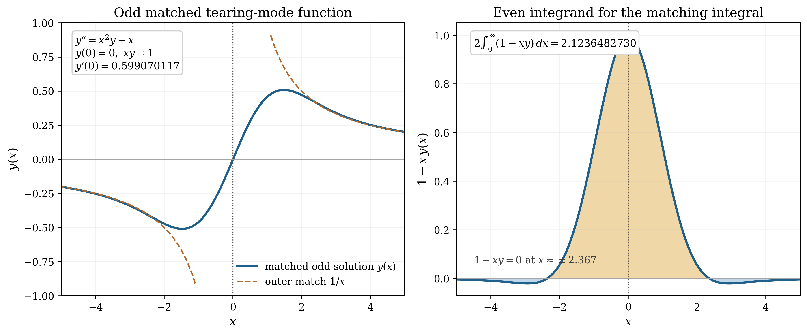
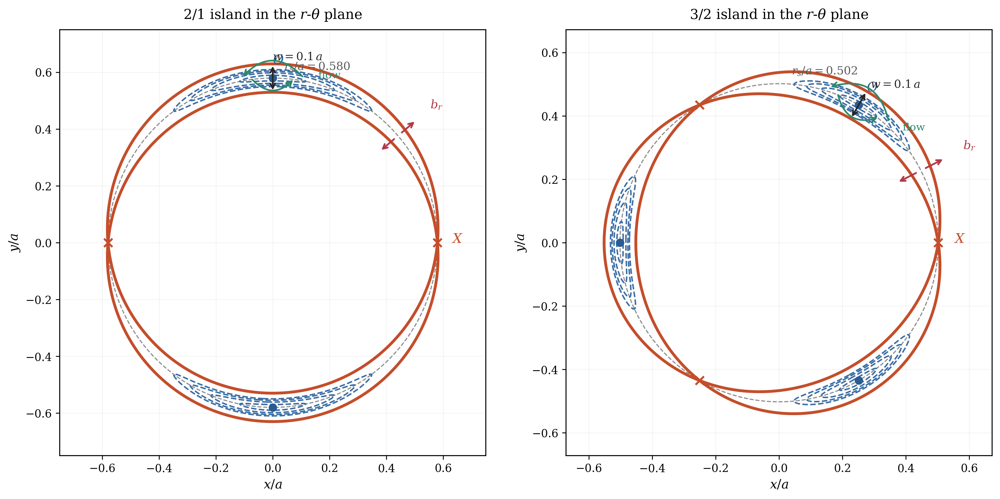
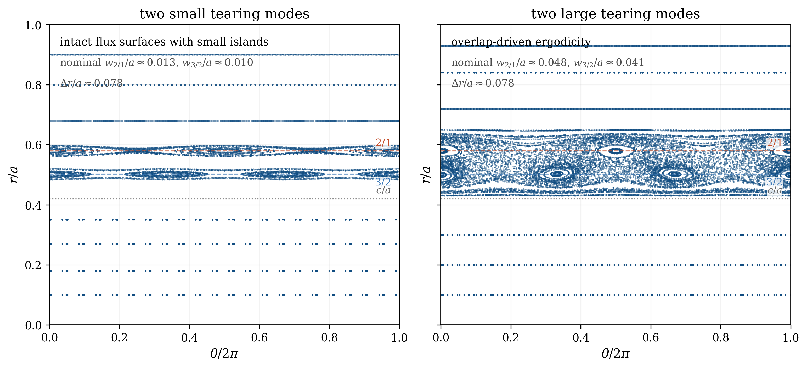

Figure 30.1: The top hat current profile used in text. Both m/n=2/1 and 3/2 are unstable for the
choice of c/a
.
Tearing modes are the first place in these notes where the ideal-MHD stability machinery must be used with a small but essential non-ideal correction. Outside a very narrow resistive layer, the plasma is still described by the ideal equations and by the same Newcomb-style outer matching used in the pinch lectures. At the rational surface, however, the ideal solution becomes singular. Finite resistivity regularizes that singularity, allows magnetic reconnection, and introduces the outer matching parameter \( \Delta ' = \bigl [\psi '/\psi \bigr ]_{r_s^-}^{r_s^+}. \) In the classical constant-\(\psi \) regime the mode is unstable when \(\Delta '>0\), and the growth rate scales like \(\gamma \propto \eta ^{3/5}(\Delta ')^{4/5}\).
What makes tearing so important is not merely that it is unstable, but that it changes magnetic topology. In toroidal confinement the same basic mechanism underlies sawtooth reconnection, low-order \(3/2\) and \(2/1\) islands, neoclassical tearing modes, locked modes, and ultimately the stochastic transport produced by island overlap. Tearing is therefore one of the main bridges between linear stability theory, nonlinear self-organization, and disruption physics.
The modern tearing-mode story begins with the paper of Furth, Killeen, and Rosenbluth, who showed that a plasma that is almost ideal everywhere can still reconnect if a thin resistive boundary layer forms at a resonant surface Furth et al. [1963]. That was the real conceptual step: the instability is not an ordinary ideal-MHD mode, but neither is it a uniformly resistive diffusion problem. It is a matched asymptotic problem, with an ideal outer region and a non-ideal inner layer.
Coppi, Greene, and Johnson soon carried this logic into cylindrical pinch geometry, showing how the same layer-matching procedure works for screw-pinch equilibria Coppi et al. [1966]. Rutherford then showed that once an island is larger than the linear resistive layer, the growth becomes algebraic rather than exponential, giving the weakly nonlinear evolution law now called the Rutherford equation ?. In toroidal confinement this physics entered the mainstream through the interpretation of the tokamak sawtooth as a current-profile relaxation driven by the \(m=n=1\) internal tearing mode ?. By the 1990s and 2000s the same island physics had reappeared in a new form: low-order \(3/2\) and \(2/1\) islands driven nonlinearly by the bootstrap current, and wall-locked modes that often mark the last stage before disruption ???.
Two cautions are worth stating at the start.
First, \(\Delta '\) is an outer-region quantity. It tells us how the ideal solution leans into the resonant layer, not the growth rate by itself. The inner-layer physics is still needed to convert \(\Delta '\) into a dispersion relation.
Second, the classical FKR result assumes the constant-\(\psi \) ordering. Large-\(\Delta '\), viscous, two-fluid, or collisionless layers modify both the layer width and the dispersion relation. The virtue of the classical problem is not that it contains everything, but that it teaches the matching idea once and for all.
The starting point is the induction equation introduced in the opening lecture, Eq. (1.13). In ideal MHD the resistive term vanishes and magnetic flux is frozen into the fluid. The ideal perturbation theory developed in the diffuse-pinch lecture then leads to the Newcomb equation, and its singular points occur where the helical field-line bending term vanishes. In cylindrical language that singularity sits at the rational surface
The physical picture is simple. If the outer ideal solution arrives at the resonant surface with a positive logarithmic derivative jump,
Take a screw-pinch equilibrium
For incompressible motion we may similarly introduce a streamfunction \(\phi \):
From the full linearized equations to the reduced tearing pair. The cleanest way to see what is being kept and what is being discarded is to start from the full linearized resistive-MHD system for a single helical harmonic. Write
\[\rho _0\gamma \,\uvec _1 = \J _1\times \B _0 + \J _0\times \B _1 - \nabla p_1, \tag{30.8}\]\[\gamma \B _1 = \nabla \times (\uvec _1\times \B _0) + \frac {\eta }{\muo }\nabla ^2\B _1,\]\[\gamma p_1 + v_r p_0' + \Gamma p_0\nabla \cdot \uvec _1 = 0, \qquad \nabla \cdot \B _1 = 0.\]We keep \(p_0(r)\) for the moment because this is exactly the same starting point that will be needed again in the resistive-interchange lecture.Now take the \(\hat z\) component of the curl of (30.8). Since \(\nabla \times \nabla p_1=0\), the pressure term is annihilated by this step:
\[\bigl (\nabla \times \rho _0\gamma \uvec _1\bigr )_z = \rho _0\gamma \,\nabla _\perp ^2\phi .\]On a single helical harmonic, \(\B _0\cdot \nabla \to iF(r)\), while \(b_r=-im\psi /r\) and \(\muo j_{1z}=\nabla _\perp ^2\psi \). Therefore\[\begin{aligned}\bigl (\nabla \times (\J _1\times \B _0 + \J _0\times \B _1)\bigr )_z &= \bigl (\B _0\cdot \nabla \,j_{1z}\bigr ) + \bigl (\B _1\cdot \nabla \,J_{0z}\bigr ) \\ &= \frac {iF(r)}{\muo }\,\nabla _\perp ^2\psi - \frac {i m}{r}J_z'(r)\,\psi .\end{aligned}\]This gives the reduced vorticity equation
\[\boxed { \rho \gamma \,\nabla _\perp ^2\phi = \frac {iF(r)}{\muo }\,\nabla _\perp ^2\psi - \frac {i m}{r}J_z'(r)\,\psi . } \tag{30.14}\]The induction equation is just as direct. Its radial component is
\[\gamma b_r = iF(r) v_r + \frac {\eta }{\muo }\nabla _\perp ^2 b_r.\]Using \(b_r=-im\psi /r\) and \(v_r=-im\phi /r\) then yields\[\boxed { \gamma \psi + iF(r)\phi = \frac {\eta }{\muo }\,\nabla _\perp ^2\psi . } \tag{30.16}\]So pressure has not been “forgotten”; it disappears from the leading tearing equations because we projected the dynamics onto the \(z\)-vorticity and induction sectors. The resistive- interchange lecture will return to the same linearized starting point but will keep the perpendicular force-balance / total-pressure sector instead of annihilating it.
Equations (30.14) and (30.16) already display the layered structure of the problem. The factor \(F(r)\) vanishes at the resonant surface, so the ideal relation between \(\phi \) and \(\psi \) breaks down there. Away from \(r_s\), however, both resistivity and inertia are small, so the outer problem is nearly ideal.
The outer equation. In the outer region we drop the inertial term in (30.14) and the resistive term in (30.16). The second equation then gives \( \phi = i\gamma \psi /F. \) Substituting into the first and neglecting the small factor \(\gamma ^2\) produces
What \(\Delta '\) measures. Once (30.17) is solved from the magnetic axis outward and from the wall inward, the only information the inner layer needs from the outer ideal region is the jump (30.2). The parameter \(\Delta '\) is therefore the cylindrical tearing counterpart of the ideal-MHD boundary data that appeared in the energy-principle lectures. When \(\Delta '>0\), the two outer solutions arrive at the resonant layer with a kink in \(\psi '\) that can be healed by reconnection; when \(\Delta '<0\), the outer solution resists such healing.
The most useful first example is not the smoothest equilibrium but the one for which the algebra can be carried all the way to the end. We therefore take the reduced-MHD current profile
Piecewise outer solutions. Away from the current jump at \(r=c\) and away from the resonant layer at \(r=r_s\), the current gradient vanishes, so (30.17) reduces to Laplace’s equation,
where regularity at the axis killed the \(r^{-m}\) term in region I and the wall condition \(\psi (a)=0\) fixed the form in region III.
Jump condition at the current step. Because \(J_z\) jumps discontinuously at \(r=c\), the derivative of \(\psi \) also jumps there. Integrating (30.17) across \(r=c\) gives
At this point the only remaining task is to evaluate the logarithmic derivatives at the resonant surface.
The right-hand derivative. From (30.25) we obtain immediately

The left-hand derivative. Using (30.24), (30.29), and (30.30) gives
In the large-wall limit \(a\gg r_s\) (so \(y\to \infty \)), Eq. (30.34) reduces to
The same profile can host \(3/2\) and \(2/1\) surfaces. Because the annular safety-factor profile (30.20) is monotone,
It is also useful to record the large-wall result for general \(m\). Taking \(y=a/r_s\to \infty \) in the algebra above gives
Why use the step profile? It is not the most realistic current profile, but it is probably the best first \(\Delta '\) example because the outer equation reduces to power laws in every region. A smooth profile such as \(J_z=J_0(1-r^2/a^2)^\nu \) is a very good next step.
Interactive Tearing-Mode Explorer
Open a browser companion to the lecture’s smooth-profile extension. The app uses \(J_z(r)=\hat J(1-r^2/a^2)^\nu\), reconstructs \(q(r)\) and \(F(r)\), solves the outer tearing equation on both sides of the resonant layer, and reports \(\Delta\!\!\prime\) for selectable \(m/n\) branches.
Open the tearing-mode explorer
For the timescale ingredients that enter the FKR and Lundquist-number estimates, jump to the Braginskii formulary calculator.
Near the resonant surface we set
With the streamfunction definition (30.7), the leading inner equations become1
The equations are greatly simplified if we assume \(b_r\sim \psi \) (not \(\psi ''\)) is constant over the inner region. We can later computer the solution directly and check. In this case we can substitute \(\psi ''\) from Eq. (30.47) into Eq. (30.46) to derive
The characteristic layer width is obtained by balancing the two terms on the right-hand side of (30.47) against the inertial response implied by (30.46):
Putting back the numerical factor in the FKR matching. To go beyond the scaling argument, introduce the dimensionless variables
\[x \equiv \frac {s}{d}, \qquad y(x) \equiv -\frac {\muo }{\eta }\frac {d}{r_s }\frac { m B_{\theta s}}{L_s}\frac {\phi }{\psi _s}. \tag{30.51}\]Focusing on the odd part of Eqs. (30.46) and (30.47) the inner equation of motion reduces to\[\begin{aligned}\left (\frac {d^2 y}{dx^2}-x^2 y\right )& =-x,\\ \frac {d^2 y}{dx^2} & = -x (1 - x y)\end{aligned} \tag{30.53}\]which can be solved in different ways include simple numerical integration.
The constant-\(\psi \) form of Ohm’s law (Eq. (30.16)) becomes
\[\psi _{xx} = \frac {\muo \gamma d^2}{\eta }\,\psi _s\,[1+x y(x)]. \tag{30.54}\]Once the function \(y\) is known, the jump in \(\psi '\) from one side to the other of the inner region can be calculated by extending the limit of integration to infinity:\[\begin{aligned}\Delta ' &= \frac {1}{\psi _s d}\int _{-\infty }^{\infty }\psi _{xx}\,dx \\ &= \frac {\muo \gamma d}{\eta } \int _{-\infty }^{\infty }[1+x y(x)]\,dx.\end{aligned} \tag{30.56}\]This problem is solved analytically in Appendix H and numerical solutions are showing in Fig. 30.3
\[\int _{-\infty }^{\infty }[1+x y(x)]\,dx = C_\Delta , \qquad C_\Delta = \frac {\Gamma (1/4)}{2\pi \Gamma (3/4)} \approx 2.12 \tag{30.57}\]Hence\[\Delta ' = C_\Delta \,\frac {\muo \gamma d}{\eta }. \tag{30.58}\]Substituting (30.50) then yields the classical constant-\(\psi \) dispersion relation with its familiar numerical coefficient,\[\gamma \simeq 0.55 \left [ \frac {\eta ^3}{\muo ^3} \frac {k_\perp ^2 V_{A\theta }^2}{L_s^2} \left (\Delta '\right )^4 \right ]^{1/5}. \tag{30.59}\]

If one only wants the exponents, the algebra can be read off directly from (30.50) and (30.58):
so

Once reconnection has begun, the helical flux function may be written locally as
When the island width becomes larger than the linear resistive layer, \(w\gg d\), inertia falls out of the inner problem and the growth turns algebraic. In that Rutherford regime ?,
Why this matters for confinement. Tearing is not just another eigenmode in a spectrum. Ideal modes can displace a flux surface and then return it. A tearing mode changes the connectivity of field lines, flattens current and pressure across a rational surface, and leaves behind a magnetic island chain. In tokamaks the \(m=n=1\) internal tearing mode explains the sawtooth crash, while the low-order \(3/2\) and \(2/1\) surfaces are the classic seats of neoclassical tearing modes. In reversed-field pinches a broad spectrum of tearing modes can overlap and stochasticize a large fraction of the plasma column. So the real importance of tearing is that it is simultaneously a stability problem, a transport problem, and a self-organization problem ??.
A schematic generalized Rutherford equation. Once pressure flattening, bootstrap current, curvature, and applied current drive are included, the weakly nonlinear evolution is no longer described by the single term (30.68). There is no unique universal normal form, because different authors package the transport thresholds and small-island physics in slightly different ways, but a very useful schematic version is
The really important lesson is that a neoclassical tearing mode is a nonlinear instability. A surface can be linearly stable in the classical sense, \(\Delta '<0\), and still grow once a seed island becomes wide enough that the bootstrap term dominates the classical stabilizing term. In tokamak language this is why sawteeth, edge-localized events, error fields, or nonlinear mode coupling can seed a \(3/2\) or \(2/1\) island which then grows on its own. The low-order island is not merely a passenger on the equilibrium; it becomes a new current-transport channel.
Mode locking and the emergence of external character. As long as an island rotates relative to the wall, plasma response and wall eddy currents partially shield the external resonant field. A simple toroidal torque balance may be written schematically as
A single tearing mode gives an island chain. A spectrum of tearing modes gives many island chains. Once neighboring separatrices overlap,

Once neighboring island chains overlap strongly enough that \(\mathcal {S}\gtrsim 1\), field lines cease to remain on smooth flux surfaces and instead execute a radial random walk. The stochastic-field picture itself goes back to Rechester and Stix, who analyzed magnetic braiding due to weak asymmetry, while the associated electron heat-transport estimate most often used in confinement theory is due to Rechester and Rosenbluth ??. A standard way to characterize the stochastic field is through the magnetic-field-line diffusion coefficient,
The reversed-field pinch provides a particularly clean laboratory test of stochastic magnetic transport because its standard state contains a broad spectrum of internally resonant tearing modes driven by the current-density gradient, and the resulting islands overlap across a substantial radial interval. In the Madison Symmetric Torus, Biewer, Forest, and collaborators used power balance, equilibrium reconstruction, and modeled internal fluctuations to compare the measured electron thermal diffusivity to stochastic-field transport. They found that the electron heat flux was primarily conductive rather than convective, that the measured \(\chi _e\) agreed well with both field-line tracing and Rechester– Rosenbluth-like estimates in the overlap region, and that transport fell near the reversal surface where magnetic diffusion is small ?. Follow-on experiments documenting the behavior of fast electrons showed that the thermal diffusivity depended strongly on \(v_\parallel \), further supporting the Rechester-Rosenbluth picture ?.
A sharper test was later carried out through the full sawtooth cycle by Reusch, Forest, and collaborators using high-time-resolution Thomson scattering together with nonlinear resistive-MHD simulations at the experimental Lundquist number. If one estimates the transport directly from field-line wandering,
The cylindrical tearing calculation above deliberately emphasized the ordinary \(m>1\) tearing mode because it gives a clean first example of \(\Delta '\). The historical tokamak problem, however, is the \(m=n=1\) internal mode. This case is special because the same displacement of the core can appear as an ideal internal kink, a resistive internal kink, or an \(m=1\) tearing mode, depending on how close the equilibrium is to ideal marginal stability. Coppi, Galvão, Pellat, Rosenbluth, and Rutherford showed that these are not three unrelated instabilities: they are different limits of a single inner–outer matching problem ?. The later review by Ara and collaborators and the tokamak-focused review by Migliuolo are useful road maps through this literature ??.
For the \(m=1\) internal mode the ideal outer eigenfunction is nearly a rigid translation of the plasma inside the \(q=1\) surface, and is small outside it:
The three limits are then easy to remember. The ideal internal kink is obtained when the resistive layer is irrelevant. The resistive internal kink is obtained near \(\delta W\simeq 0\), where the layer itself sets the rate,
The reason this belongs at the end of the tearing lecture is that it prepares the reader for the plasmoid calculation in Lecture 33, especially the high-Lundquist-number current-sheet analysis of Loureiro, Schekochihin, and Cowley ?. In the plasmoid problem the control parameter is not \(\delta W_H\) but the wavelength along a long current sheet. Take a local sheet half-thickness \(a\), local Alfvén time \(\tau _{A,a}=a/V_A\), magnetic diffusivity \(\eta _m=\eta /\mu _0\), and \(S_a=aV_A/\eta _m\). For a Harris-like sheet, the outer matching parameter is
At smaller \(k\), the FKR approximation predicts an inner layer so wide that \(\Delta '\delta _{\rm in}\) is no longer small. The perturbation is then nonconstant across the layer, and the Coppi branch replaces the FKR branch:
- Tearing modes are matched-asymptotic instabilities: ideal outside, resistive inside.
- The outer ideal problem determines the single number \(\Delta '\), defined in Eq. (30.2).
- In the constant-\(\psi \) regime the classical growth law is \(\gamma \propto \eta ^{3/5}(\Delta ')^{4/5}\).
- The two-region current profile (30.18) is an especially useful worked example because \(\Delta '\) can be computed analytically, changes sign, and can host both \(3/2\) and \(2/1\) resonant surfaces.
- The generalized Rutherford equation explains why neoclassical tearing modes are subcritical: even a classically stable surface can grow if a seed island is large enough.
- Once an island locks to the wall, the perturbation takes on a more external character and can become a direct disruption precursor.
- The unified \(m=1\) theory organizes the ideal kink, resistive kink, and \(m=1\) tearing mode as limits of one matching problem.
- The same matching logic produces the high-\(k\) FKR and low-\(k\) Coppi branches that underlie the plasmoid instability in Lecture 33.
- In the nonlinear phase, multiple islands can overlap and make the magnetic field stochastic.
James Clerk Maxwell. A Treatise on Electricity and Magnetism. Clarendon Press, Oxford, 1873. 2 vols.
Archimedes. The Works of Archimedes. Cambridge University Press, Cambridge, 1897. Contains On Floating Bodies, Books I–II.
Daniel Bernoulli. Hydrodynamica, sive de viribus et motibus fluidorum commentarii. Johann Reinhold Dulsecker, Argentorati, 1738.
Leonhard Euler. Principes généraux du mouvement des fluides. Mémoires de l’Académie Royale des Sciences et des Belles-Lettres de Berlin, 11:274–315, 1757.
Claude-Louis Navier. Mémoire sur les lois du mouvement des fluides. Mémoires de l’Académie des Sciences de l’Institut de France, 6, 1823. Read in 1822; the volume is commonly cited as 1823 and was issued in 1827.
George Gabriel Stokes. On the theories of the internal friction of fluids in motion, and of the equilibrium and motion of elastic solids. Transactions of the Cambridge Philosophical Society, 8: 287–319, 1845.
Olivier Darrigol. Worlds of Flow: A History of Hydrodynamics from the Bernoullis to Prandtl. Oxford University Press, Oxford, 2005.
A. Tamburrino. From navier to stokes: Commemorating the bicentenary of navier’s equation on the lay of fluid motion. Fluids, 9(1):15, 2024. doi:10.3390/fluids9010015.
Augustin-Louis Cauchy. Recherches sur l’équilibre et le mouvement intérieur des corps solides ou fluides, élastiques ou non élastiques. Bulletin de la Société Philomathique de Paris, pages 9–13, 1823.
Harold Grad and H. Rubin. Hydromagnetic equilibria and force-free fields. Technical report, New York University, Institute of Mathematical Sciences, October 1958. Also circulated through the 2nd International Conference on the Peaceful Uses of Atomic Energy, Geneva.
V. D. Shafranov. On magnetohydrodynamical equilibrium configurations. Soviet Physics JETP, 6:545–554, 1958.
Julius Hartmann and Freimut Lazarus. Hg-dynamics II: Experimental investigations on the flow of mercury in a homogeneous magnetic gield". Matematisk-fysiske Meddelelser, 15(7):1–45, 1937.
Hannes Alfvén. Existence of electromagnetic-hydrodynamic waves. Nature, 150(3805):405–406, 1942.
J. Hartmann. Hg dynamics I: Theory of the laminar flow fo an electrically conducting liquid in a homogeneous magnetic field". Mathematisk-fysiske Meddelelser, 15(6), 1937.
G. K. Batchelor. An Introduction to Fluid Dynamics. Cambridge University Press, Cambridge, 1967.
S. Chandrasekhar. Hydrodynamic and Hydromagnetic Stability. Clarendon Press, Oxford, 1961.
P. A. Davidson. An Introduction to Magnetohydrodynamics. Cambridge University Press, Cambridge, 2001.
S. Molokov, R. Moreau, and H. K. Moffatt, editors. Magnetohydrodynamics: Historical Evolution and Trends. Springer, Dordrecht, 2007.